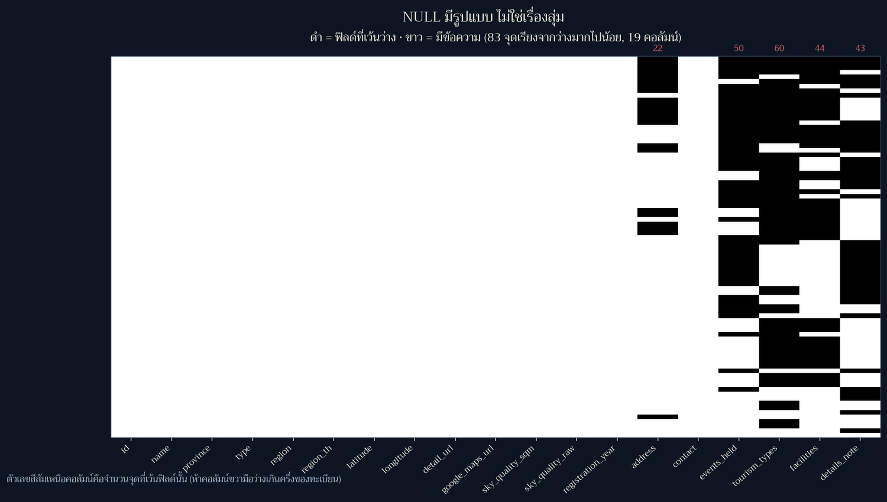
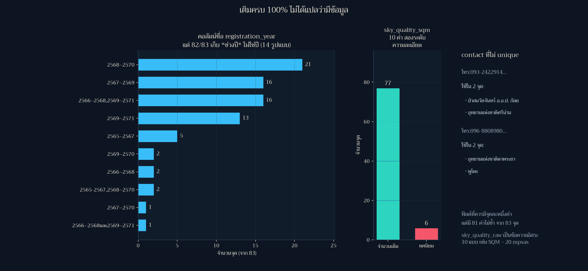
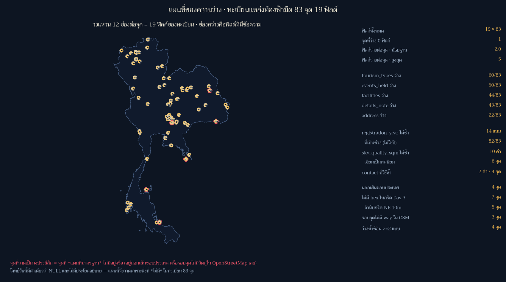

Day 18 · NULL — แผนที่ของความว่าง: ทะเบียนฟ้ามืด 83 จุดมี 219 เซลล์ที่ว่าง (13.89%) และคอลัมน์ที่เติมครบ 100% ก็มี NULL ซ่อนอยู่

โจทย์ทางการวันนี้คือ “NULL” — และนั่นคือทั้งหมดที่เขาให้มา ผมเปิดหน้า 30daymapchallenge.com สองครั้งเพื่อยืนยันว่าวันที่ 18-11-2026 มีแค่คำนั้นคำเดียว ไม่มีประโยคอธิบายเหมือนวันอื่น โจทย์จึงเป็น NULL ด้วยตัวมันเอง ซึ่งเป็นวิธีเปิดเรื่องที่ยุติธรรมที่สุด
ผมอ่านโจทย์เป็นคำถามเดียว: ในทะเบียนแหล่งท้องฟ้ามืด 83 จุดของไทย ความว่างหน้าตาเป็นอย่างไร และพบว่า NULL มีสามชนิดที่ไม่ควรพูดปนกัน
ที่มาของแผนที่
ทะเบียน NARIT ที่ใช้มาตั้งแต่ Day 1 มี 83 จุด × 19 ฟิลด์ = 1,577 เซลล์ ผมอ่านไฟล์ด้วย keep_default_na=False เพื่อให้ค่าว่างเป็น สตริงว่างจริง ๆ ไม่ถูก pandas แปลงเป็น NaN แล้วนับตกหล่น (ถ้าให้ pandas แปลงเอง คอลัมน์ registration_year จะดูเหมือน “ครบ 100%” ทั้งที่ค่าข้างในไม่ใช่ปี)
ความว่างสามชนิดที่ผมวัด
| ชนิด | มันคืออะไร | วัดยังไง |
|---|---|---|
| NULL จริง | ฟิลด์ที่ไม่มีใครกรอก | นับเซลล์ที่ค่า (ตัดช่องว่างหัวท้าย) เป็นสตริงว่าง |
| NULL ที่แกล้งเป็นข้อมูล | ฟิลด์ที่เติมครบ 100% แต่ไม่ให้สิ่งที่ชื่อคอลัมน์สัญญา | นับรูปแบบไม่ซ้ำ / ระดับความละเอียด / ค่าที่ใช้ซ้ำ |
| NULL ที่แผนที่สร้าง | จุดทะเบียนที่แผนที่มาตรฐานไม่มีที่อยู่ | ตรวจกับ polygon, H3 fill และจำนวน way จาก Day 16 |
ผลลัพธ์
๑. NULL จริง — 219 จาก 1,577 เซลล์ (13.89%)

ทั้งห้าคอลัมน์ที่ว่างอยู่คือคอลัมน์ “ข้อมูลเสริม” ทั้งหมด ส่วน 14 คอลัมน์หลักเติมครบ 100%
| คอลัมน์ | จุดที่เว้น | ร้อยละ |
|---|---|---|
tourism_types |
60 จาก 83 | 72.3% |
events_held |
50 จาก 83 | 60.2% |
facilities |
44 จาก 83 | 53.0% |
details_note |
43 จาก 83 | 51.8% |
address |
22 จาก 83 | 26.5% |
ต่อจุด: ต่ำสุด 0 · มัธยฐาน 2.0 · ค่าเฉลี่ย 2.639 · สูงสุด 5 ฟิลด์ (จาก 19) มีจุดที่กรอกครบทุกฟิลด์เพียง 1 จุด และมี 41 จุดที่ว่างตั้งแต่ 3 ฟิลด์ขึ้นไป
ความว่างไม่กระจายตัวสุ่ม — มันจัดกลุ่มตามสถานะที่ดิน
ผู้ถือครอง (ฟิลด์ type) |
จำนวนจุด | ฟิลด์ว่าง · มัธยฐาน | ฟิลด์ว่าง · ค่าเฉลี่ย |
|---|---|---|---|
| อุทยานท้องฟ้ามืด | 25 | 3.0 | 3.2 |
| ชุมชนอนุรักษ์ | 2 | 4.0 | 4.0 |
| อุทยานแห่งชาติ | 2 | 2.5 | 2.5 |
| ที่ดินส่วนบุคคล | 43 | 2.0 | 2.395 |
| พื้นที่ชานเมือง | 10 | 2.0 | 2.1 |
| ส่วนบุคคล + ชุมชน | 1 | 2.0 | 2.0 |
จุดที่เป็น อุทยานท้องฟ้ามืด (สถานะที่ควรได้รับการดูแลมากที่สุด) เป็นกลุ่มที่กรอกข้อมูลน้อยที่สุด (มัธยฐาน 3 ฟิลด์, ค่าเฉลี่ย 3.2) ส่วนที่ดินส่วนบุคคลซึ่งมีจุดมากที่สุดกลับกรอกดีกว่า (2.395) นี่คือครั้งที่สามติดต่อกันที่ซีรีส์นี้เจอ pattern เดียวกัน — Day 16 พบว่าแผนที่รอบที่มืดที่สุดบางที่สุด Day 17 พบว่าฟ้ากับแผนที่เดินคนละทาง และวันนี้ ทะเบียนเองก็ว่างที่สุดตรงที่ฟ้าดีที่สุด
๒. NULL ที่แกล้งเป็นข้อมูล — เติมครบ 100% ไม่ได้แปลว่ามีข้อมูล

registration_year เติมครบ 83/83 แต่ 82 ค่าเป็น ช่วงปี ไม่ใช่ปี เช่น พ.ศ. 2568 – 2570 มีค่าเดียวที่เป็นปีเดี่ยว (พ.ศ. 2564) และเขียนได้ 14 รูปแบบ ด้วยตัวคั่นที่ไม่เหมือนกันถึง 4 แบบ (en dash 81 · hyphen 4 · คำว่า “และ” 2 · จุลภาคเพื่อต่อช่วง 19) ชื่อคอลัมน์สัญญาข้อเท็จจริงอย่างหนึ่ง ข้อมูลให้ข้อเท็จจริงอีกอย่าง — ในเชิงความหมาย นี่คือ NULL ที่ใส่ชุดมาเต็มยศ
sky_quality_sqm เติมครบ แต่ 77 จุดบันทึกเป็นจำนวนเต็ม (19, 20, 21, 22) ขณะที่ 6 จุดเป็นทศนิยม (20.50, 21.06, 21.10, 21.11, 21.28, 21.42) รวมแล้ว 10 ค่าไม่ซ้ำในคอลัมน์เดียว ค่าที่พบมากที่สุดคือ 20 จำนวน 29 จุด (34.9%) — การเปรียบเทียบระหว่างจุดจึงทำได้แค่หยาบ และจุดที่วัดละเอียดกว่าไม่ได้ “ดีกว่า” มันแค่ถูกบันทึกคนละแบบ
sky_quality_raw เติมครบ 100% เช่นกัน แต่เป็น ข้อความอิสระ 10 แบบ ที่ขึ้นต้นด้วย “SQM” ทั้ง 83 ค่า (เช่น SQM ~ 20 mpsas) — ข้อมูลเดียวกับ sky_quality_sqm แต่ใส่ในรูปแบบที่เครื่องคำนวณต่อไม่ได้
contact เป็นฟิลด์ที่ชื่อชวนให้คิดว่ามีจุดละหนึ่งค่า แต่มี 81 ค่าไม่ซ้ำจาก 83 จุด คือมี 2 ค่าที่ถูกใช้ร่วมกัน 4 จุด — จุดทะเบียนสองคู่ใช้ช่องทางติดต่อเดียวกัน (อ่านรายชื่อจุดได้จาก day18_stats.json under fake_nulls.contact.examples)
๓. NULL ที่แผนที่เป็นคนสร้าง
จุดที่ มีอยู่จริงในทะเบียน แต่ไม่มีที่อยู่บนแผนที่มาตรฐานที่ซีรีส์นี้ใช้ — และมันทับซ้อนกัน
| ความว่างแบบที่ | จำนวนจุด |
|---|---|
| พิกัดอยู่นอก polygon ประเทศไทยของ Natural Earth 10m | 4 |
| ไม่มี hex เป็นของตัวเองในกริด res 5 (นับตามกริด Day 3 ที่สร้างจาก GADM) | 7 |
| ไม่มี hex เป็นของตัวเอง (นับตามกริดที่เติมจาก Natural Earth 10m) | 5 |
| รอบจุด (1 กม.) ไม่มีวัตถุใน OpenStreetMap เลย (ต่อจาก Day 16) | 3 |
| ว่างพร้อมกันตั้งแต่สองความหมายขึ้นไป | 4 |
สี่จุดที่ว่างซ้ำซ้อนคือ หอดูดาวเฉลิมพระเกียรติฯ สงขลา, อุทยานแห่งชาติเขาพระวิหาร, เกาะพะลวยบีชบังกะโล, โซเนวา คีรี รีสอร์ท — จุดแรกน่าสนใจที่สุดเพราะมัน ไม่มีข้อมูลรอบตัวเลย ใน OSM ด้วย (way = 0) และอยู่ นอกเส้นขอบประเทศ ในไฟล์มาตรฐานด้วย: ทะเบียนบอกว่ามีหอดูดาวแห่งหนึ่งอยู่ในประเทศไทย แต่แผนที่สองระบบที่ผมใช้ไม่ยอมรับว่ามันอยู่ข้างใน
นี่คือภาพที่วาดเป็น วงประสีส้ม บนแผ่นหลัก — จุดที่ผมจงใจไม่ใส่ marker เพราะ “การไม่มีอยู่บนแผนที่” ควรถูกวาดเป็นการไม่มีอยู่ ไม่ใช่เป็นจุดสีดำเหมือนจุดอื่น

วิธีทำแบบย่อ
- อ่าน
data/darksky_thailand.csvแบบkeep_default_na=False→ นับสตริงว่าง (หลัง strip) ต่อเซลล์ - นับต่อคอลัมน์ / ต่อจุด / ตามผู้ถือครอง (
typeย่อตาม Day 12) / ตามภูมิภาค - วิเคราะห์ฟิลด์ที่เติมครบ: จำนวนรูปแบบไม่ซ้ำของ
registration_year, ตัวคั่น, จำนวนเต็ม vs ทศนิยมของsky_quality_sqm, ค่าซ้ำในcontact - คำนวณใหม่ (ไม่ลอก Day 14): จุดที่
TH.contains(point)ไม่เป็นจริง, จุดที่h3.latlng_to_cell(..., 5)ไม่อยู่ในกริด ทั้งสองนิยาม (Day 3 GADM และ NE 10m fill) - อ่าน
day16_sites_osm.csvหาจุดที่ways == 0→ ตัดเซตหาจุดที่ว่างซ้ำซ้อน - วาดสามภาพ: matrix ความว่าง, แผง “แกล้งเป็นข้อมูล”, และแผนที่วงแหวน 12 ช่องต่อจุด (ช่องสว่าง = ฟิลด์ที่มีข้อความ) + วงประสำหรับจุดที่แผนที่ไม่มีอยู่
- ตรวจ: assert ว่าผลรวมความว่างต่อจุด = ต่อคอลัมน์ = ทั้งตาราง (219), assert ว่า 4 / 7 / 5 ตรงกับที่ Day 14 บันทึก,
lint_thai, สแกน unicode ทั้งไฟล์
ข้อจำกัดที่ต้องบอกตรง ๆ
- “ว่าง” ในที่นี้หมายถึงสตริงว่าง ผมไม่ได้ตรวจว่าค่าที่กรอกมา จริง หรือไม่ เช่น
contactที่ซ้ำกันอาจเป็นการกรอกผิดหรือเป็นที่เดียวกันจริงก็ได้ — ผมรายงานความซ้ำ ไม่ได้ตัดสิน - ห้าคอลัมน์ที่ว่างมากอาจเป็น “ไม่ได้เก็บ” ไม่ใช่ “เก็บไม่ได้” — ผมไม่รู้ว่าแบบฟอร์มของ NARIT บังคับหรือสมัครใจ ถ้าเป็นสมัครใจ อัตรา 72.3% คืออัตราการตอบแบบ ไม่ใช่คุณภาพท้องฟ้า
- การเทียบผู้ถือครองมีกลุ่มตัวอย่างเล็กมาก — ชุมชนอนุรักษ์ 2 จุด และอุทยานแห่งชาติ 2 จุด มัธยฐาน 4.0 กับ 2.5 ของกลุ่มละสองจุดไม่ใช่ข้อสรุป ผมรายงานไว้เพราะเป็นตัวเลขที่คำนวณได้ ไม่ใช่เพราะมันมีความหมายทางสถิติ (ไม่ได้ทดสอบนัยสำคัญ)
- ตัวเลข “4 / 7 / 5” ของจุดที่หายไปจากแผนที่ขึ้นกับต้นทางเส้นขอบ — Day 3 ใช้ GADM วันนี้จึงรายงานทั้งสองนิยามแทนที่จะเลือกอันที่ดูดีกว่า
- แผ่นนี้ไม่ใช่มุมมอง “ข้อมูลแย่” — 14 จาก 19 คอลัมน์เติมครบ 100% และคอลัมน์ที่ขาด เป็นคอลัมน์ส่งเสริมการท่องเที่ยว ไม่ใช่คอลัมน์ที่จำเป็นต่อการทำแผนที่ ผมทำแผนที่นี้เพราะความว่างมีรูปแบบ ไม่ใช่เพราะทะเบียนแย่
ไฟล์ประกอบ
- day18_null.png — แผนที่วงแหวนความครบถ้วน 83 จุด + วงประสำหรับจุดที่แผนที่ไม่มีอยู่
- day18_matrix.png — matrix 83 × 19 ของความว่าง เรียงจากจุดที่ว่างมากไปน้อย
- day18_fake_nulls.png — 14 รูปแบบของ
registration_year, ความละเอียดปนกันของ SQM,contactที่ซ้ำ - day18_null_sites.csv — ทุกจุด: จำนวนฟิลด์ว่าง, ฟิลด์ไหนว่าง, รูปแบบปี, ความละเอียด SQM, สถานะ “หายจากแผนที่”
- day18_by_holder.csv — สรุปความว่างตามสภาพการถือครองที่ดิน
- day18_stats.json — ตัวเลขทุกตัว +
metric_definitions+cross_check_day14/cross_check_day16


บทเรียน
- นับค่าว่างต้องอ่านแบบไม่ให้ pandas แปลงเอง — ถ้าปล่อยให้เป็น NaN ผมจะนับไม่ตรง และที่สำคัญกว่านั้น คอลัมน์ที่เต็มไปด้วยช่วงปีจะถูกเรียกว่า “ครบ 100%” โดยไม่มีใครสงสัย
keep_default_na=False+ strip แล้วเทียบกับสตริงว่าง คือวิธีเดียวที่ได้ 219 ที่ถูกต้อง - assert ข้ามวันจับบั๊กของผมเองได้จริง — ตอนแรกผม assert ว่า “จุดที่ไม่มี hex ต้องเป็น 5” ตามตัวเลขของ Day 14 แล้วมันพัง เพราะ Day 14 บันทึกไว้ สอง ตัวเลข (5 จากกริด NE 10m, 7 จากกริด GADM) ถ้าไม่มี assert นั้น ผมจะรายงาน 7 แล้วอ้างว่าตรงกับ 5 — และทั้งโพสต์จะผิดแบบที่ไม่มีใครจับได้
- หมวดหมู่ “null” ทำให้ Quarto crash จริง — ตอนแรกผมเขียน
categories: [30DayMapChallenge, ..., null]โดยไม่ใส่อัญประกาศ YAML ก็แปลงคำนั้นเป็นค่าว่าง ตามความหมายของมันเอง แล้ว Quarto พังด้วยCannot read properties of nullต้องแก้เป็น"null"แบบมีอัญประกาศ — วันที่ทำเรื่อง NULL เครื่องมือก็ล้มเพราะเรื่อง NULL เสียจริง - NULL ที่อันตรายที่สุดคือ NULL ที่เติมครบ — เซลล์ว่างนั้นซื่อสัตย์ มันบอกว่า “ไม่มีข้อมูล” แต่
registration_yearที่เก็บช่วงปี 82 จาก 83 ค่า ทำให้ทุกโค้ดที่อ่านคอลัมน์นี้คิดว่าเป็นปี และจะได้คำตอบที่ผิดอย่างมั่นใจ - ความว่างมีรูปแบบ และรูปแบบนั้นคือข้อมูล — ห้าคอลัมน์ที่ว่างล้วนเป็นคอลัมน์เสริม, จุดที่ว่างมากที่สุดคือจุดที่ฟ้าดีที่สุด, และจุดที่หายไปจากทะเบียนกับจุดที่หายไปจากแผนที่ เป็นจุดกลุ่มเดียวกันสี่จุด นี่คือแผนที่ที่ ควร วาด: แผนที่ของตำแหน่งที่ระบบข้อมูลของเราไม่รู้จริง